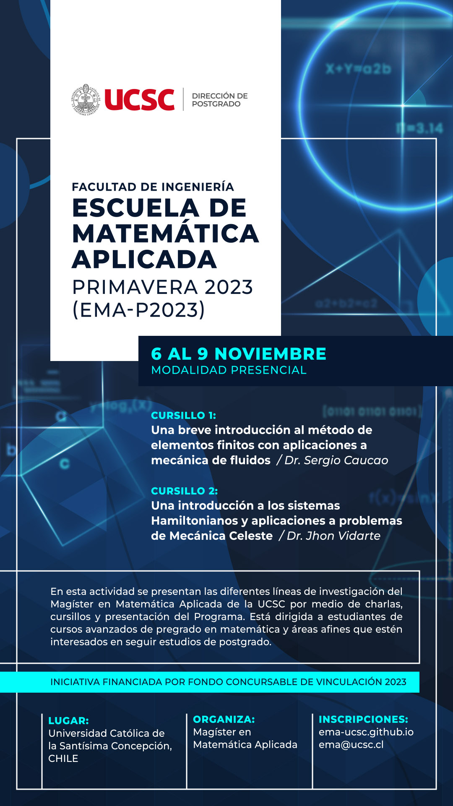

Escuela de Matemática Aplicada, Primavera 2023 (EMA-P2023) |
La Escuela de Matemática Aplicada-Primavera 2023 (EMA-P2023) es un evento organizado por el programa de postgrado Magíster en Matemática Aplicada (M2A) de la Facultad de Ingeniería de la Universidad Católica de la Santísima Concepción, Chile. Se llevará a cabo del 6 al 9 de noviembre de 2023 y tiene como objetivo principal dar a conocer las líneas de investigación que actualmente se desarrollan en el programa.
La escuela está dirigida a graduados o estudiantes de los últimos semestres de Licenciatura en Matemáticas o áreas afines, así como de programas de pregrado con fuerte base matemática y que tengan interés en matricularse en un programa de postgrado que potencie su formación académica y preparación científica especializada en áreas de la Matemática Aplicada.
Se ofrecerán dos cursillos representativos de las líneas de investigación del programa: Análisis Numérico de Ecuaciones Diferenciales Parciales y Sistemas Dinámicos. Además, cuatro charlas en las cuales se presentan temas de investigación de las dos líneas desarrolladas por profesores y egresados del M2A.
|  |
En esta ocasión, todas las actividades se realizarán en modalidad presencial en las dependencias de la Universidad. El evento no tiene ningún costo, pero solo podrán participar en las actividades las personas seleccionadas por el Comité Organizador. Para los interesados que no puedan asistir presencialmente al evento, las actividades del día miércoles 8 de noviembre (ver programa) se realizará en forma híbrida, por lo que se podrán hacer consultas por medio de la plataforma Zoom sobre el M2A. Para recibir el link de enlace, también se debe llenar el formulario de postulación. Fechas importantes:Las postulaciones están abiertas hasta el día martes 24 de octubre. La notificación de los seleccionados será el día jueves 26 de octubre. |